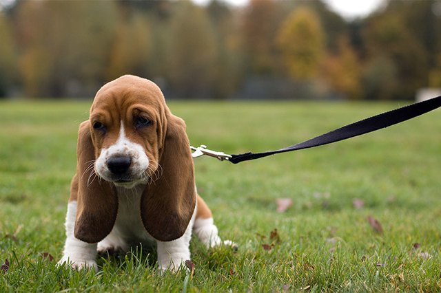
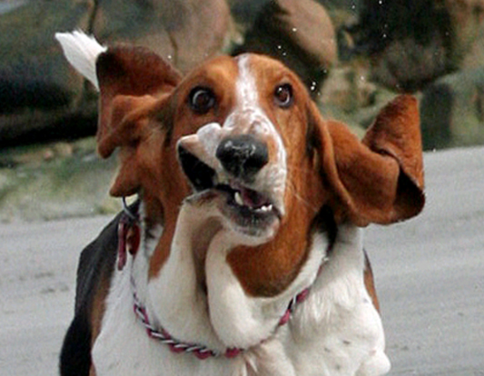

Pros of Basset Hounds:
- Is one of the most good-natured of all breeds
- Is sociable with people and other animals
Cons of Shelties:
- Slowness to learn and an independent "what's in it for me?" attitude toward training
- Running away, oblivious to your calls, when an interesting scent catches his attention
- Slowness to housebreak
- Baying and howling
- Slobbering and drooling
- Snoring
- Heavy shedding (yes, even though he's shorthaired!)
- A distinctive houndy odor
- Gassiness (flatulence)
- Chronic health problems

As you can see, Basset Hounds are an adorable, strong contender. However, they are not immune to a long list of
undesirable traits.